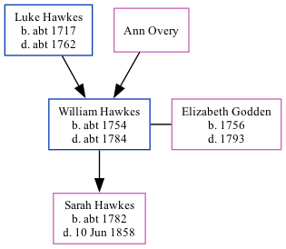

The child of Luke Hawkes and Ann OveryWilliam Hawkes, the 5 times great-grandfather of Nigel Horne, was born in Ash, Kent, England c. 1754, was baptized there on Apr 14, 1754 and also married Elizabeth Godden (with whom he had 1 child, Sarah Anne, ) there, on Aug 16, 17771.
He died c. 1784 in Ash1 and was buried there on Jul 2, 1784.
Kent, England, Tyler Index to Parish Registers, 1538-1874 Online publication - Provo, UT, USA: Ancestry.com Operations, Inc., 2010. This collection was indexed by Ancestry World Archives Project contributors.Original data - Frank Watt Tyler. The Tyler Collection. Canterbury, Kent, England: The Institute of Herald
Family Tree

Interactive Map
Map
Generated by ged2site. Last updated on Feb 18, 2025